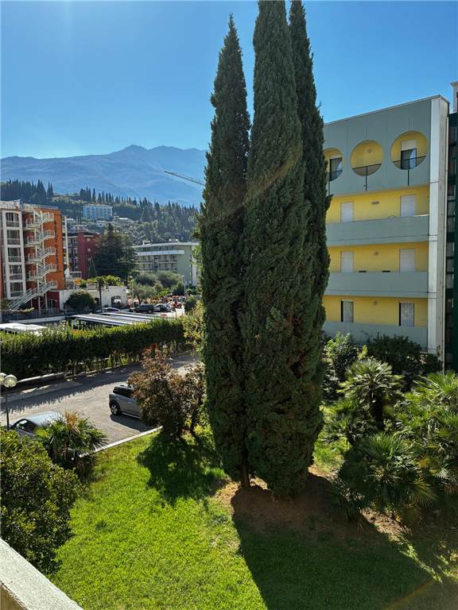
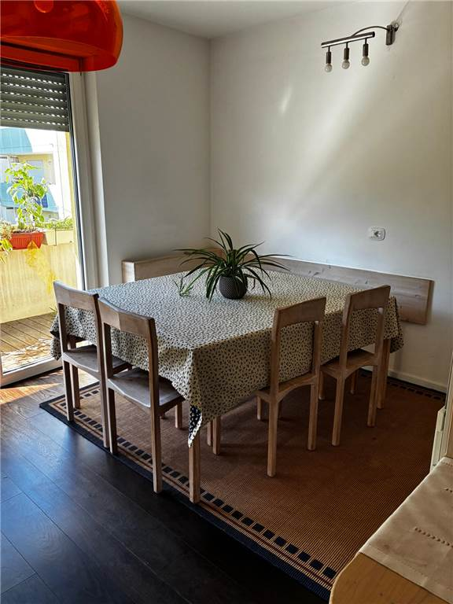
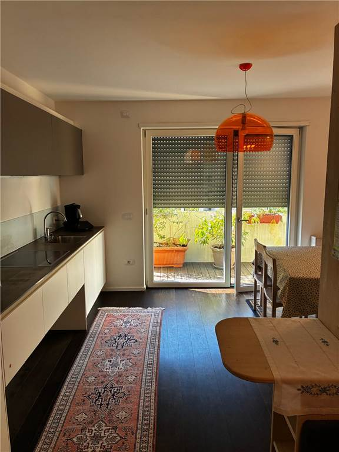
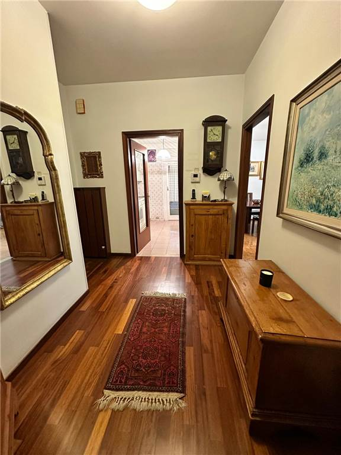
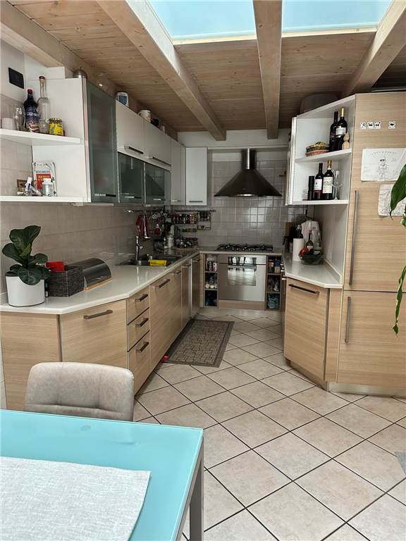
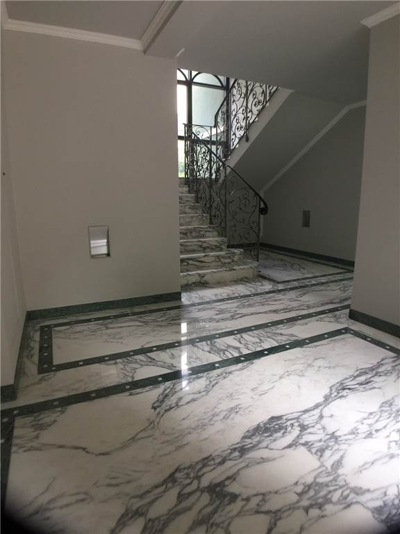

Il lago vicino, ogni giorno.
Quadrilocale in via Vicenza, zona lago, Riva del Garda
529.000 €
Una passeggiata verso la spiaggia, il tempo per una pausa sul lago, il piacere di tornare a casa.
Nella zona lago di Riva del Garda, un appartamento con tutti i comfort, i servizi vicini e la possibilità di vivere il lago anche nei piccoli momenti di ogni giorno. Per chi desidera sentirsi un po' in vacanza, anche a casa propria.
Ascensore, aria condizionata, domotica, porta blindata, videocitofono, cancello elettrico, parco condominiale, armadi a muro e ripostiglio. Non arredato.
- Superficie
- 89 mq
- Locali
- 6
- Camere
- 3
- Bagni
- 2
- Garage
- 1
- Posto auto
- 1
- Classe energetica
- C
- Panorama
- vista aperta
- Esposizione
- nord, est, sud
- Riscaldamento
- autonomo, a metano
- Raffrescamento
- fan coil
- Infissi
- alluminio, triplo vetro
- Pavimenti
- parquet
- Isolamento
- cappotto esterno
Altre case in vetrina

2430 VIl piacere del centro, lo spazio di una casa da vivere.
Riva del Garda, via Prati, in centro
- Superficie
- 156 mq
- Locali
- 6
- Prezzo
- 636.000 €

2426 VAlle porte di Arco, lo spazio per abitare bene.
Arco, vicino a tutti i servizi
- Superficie
- 128 mq
- Locali
- 5
- Prezzo
- 454.000 €

2516 VSpazio da vivere, in uno dei viali più apprezzati di Riva.
Riva del Garda, viale dei Tigli
- Superficie
- 270 mq
- Locali
- 10
- Prezzo
- riservato
L'ufficio
Via Fiume 50, Riva del Garda
Telefono 0464 557444
Fax 0464 520904
info@gardadomus.com
- Lun-ven
- 9-12 e 15-18
- Sabato
- 9-12
- Domenica
- chiuso